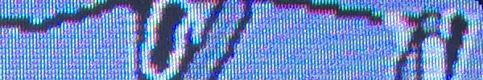

üëπ ARTSTUFF.WTF

THR 2/23
LA Art Book Fair (opening night)
The Geffen Contemporary At MOCA
6pm - 9pm preview (also Friday 1-7pm, Sat 11am-7pm, Sun 11am-6pm)
$10 opening night, comes with artist edition (free all other days)
Printed Matter’s LA Art Book Fair is a unique event for artists’ books, art catalogs, monographs, periodicals, and zines presented by over 300 international presses, booksellers, antiquarians, artists, and independent publishers. Thursday opening features performances by Seth Bogart and Kembra Pfahler & Christian Music from The Voluptuous Horror of Karen Black. Felt Book performances during opening night present readings, video and performances that address the changing political & social reality in 2017 by the Institute For New Feelings.
LINK
FRI 2/24
NAH FAIR
374 E 2nd St
5 - 10pm (and Saturday 1-9pm)
FREE
FREE. ADJACENT TO THE LAABF. MOSTLY L.A. BASED, MOSTLY P.O.C., AND ENTIRELY ANTI-AUTHORITARIAN. 49 UNGOVERNABLE PROJECTS & HUSTLES. LA Cryptoparty, What is ungovernable feminism?, n0 eg0 p0ets, SupportFM and much more.
INFO
Busta Rhymes at the End of the World
Machine Project
8pm
FREE
The lecture will explore Busta Rhymes and his suite of apocalyptic concept albums — The Coming (1996), When Disaster Strikes (1997), Extinction Level Event (1998), Anarchy (2000), and Genesis (2001) — and their accompanying visuals. Over the course of the five albums, Busta Rhymes weaves a complex narrative of global demise and eventual regeneration of which he (the ‘black child’, the ‘black man’) is at the center. In this talk, I suggest that Busta’s apocalypse speaks to something beyond generalized global crisis at the millennium–and fear of what the millennium would bring, instead speaking to an apocalyptic blackness that is influenced by both afrofuturism and Busta’s relationship to the Five Percent Nation, and resonates with directions in black radical thought, both new and old.
LINK

SAT 2/25
Show #28: Jacob Ciocci
And/Or Gallery
6pm - 9:30pm
FREE
And/Or Gallery is pleased to announce Jacob Ciocci’s debut solo show in Los Angeles. In his videos, paintings, and performances, Ciocci uses pop culture, nostalgia, and branding to explore profound and mundane expressions of freedom, authenticity, suffering, and rage. Although he works across media, his art most often takes the form of collage, with Ciocci combining his own existential questioning and philosophical consolations with absurd found footage and other cultural detritus culled from the internet, the trash, or the nearest strip mall of franchised chains. For Ciocci, internet culture is analogous to melancholy in that both constantly flit between meaningless and meaning, between poignancy and banality, between the gleeful and the ghastly. As the artist says, “We don’t get the shareable culture we want; we get the shareable culture we deserve.”
INFO

SUN 2/26
KCHUNG Radio Residency at the Getty Center
The Getty
2pm - 5pm
FREE ($10 to park)
Los Angeles' artist-run community radio station KCHUNG is in residence at the Getty Center in connection with the exhibition Breaking News: Turning the Lens on Mass Media. While in residence, KCHUNG contributors will produce 8 episodes live on-site at the Getty, and assemble an archive featuring a diverse breadth of content from KCHUNG's artistic community, including interviews, performances, and live reporting, to explore both exhibition themes and current events. This is the last live recorded episode, a reading of John Berger's Ways of Seeing.
INFO

ABOUT
ARTSTUFF.WTF is a minimal website listing page for selected art (and etc) events going on around Los Angeles. It is a personal list of 4 - 6 events sent out to friends weekly, and made available online here for bookmarking and quick reference. There is an archive of past listings. Sign up to receive weekly emails.